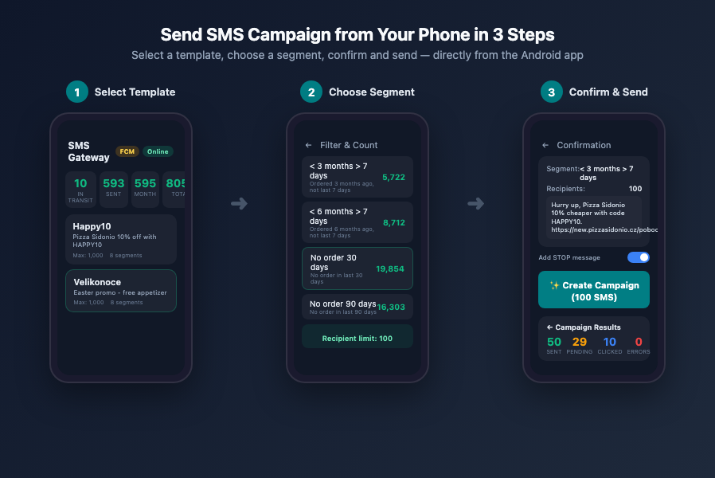
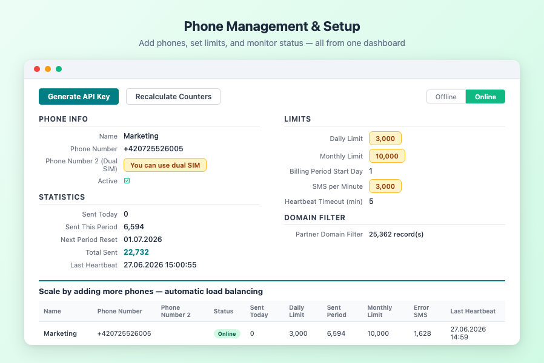
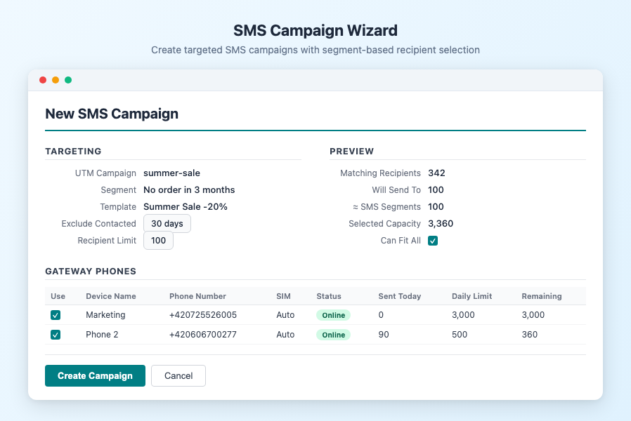
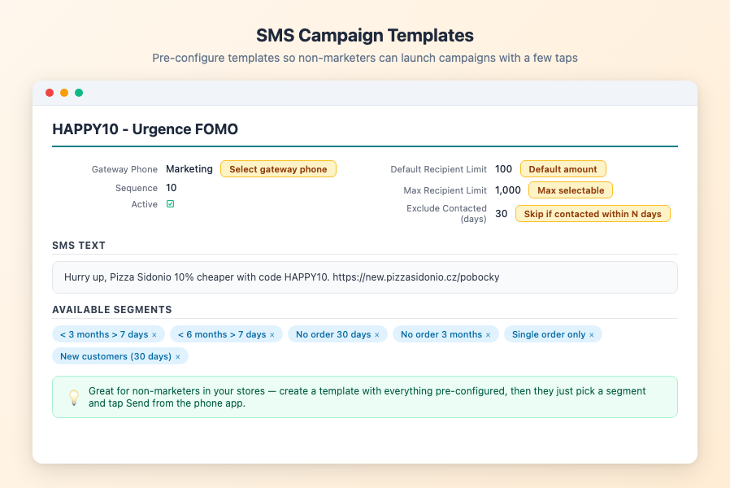
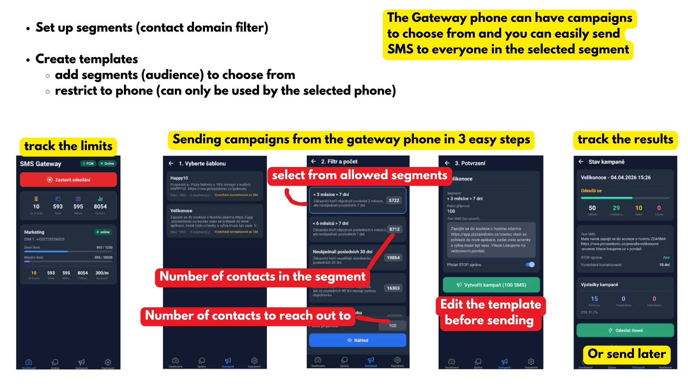
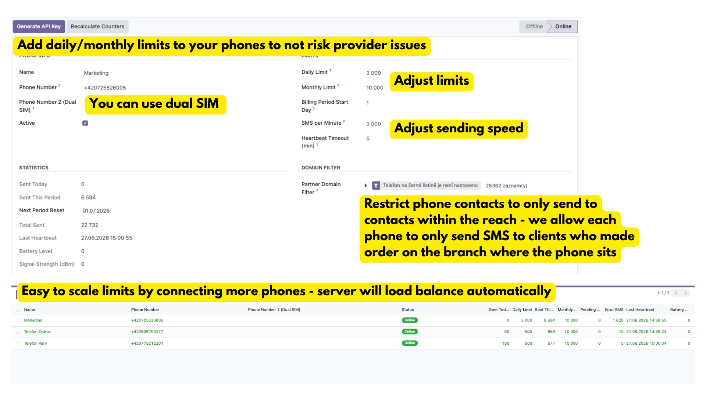
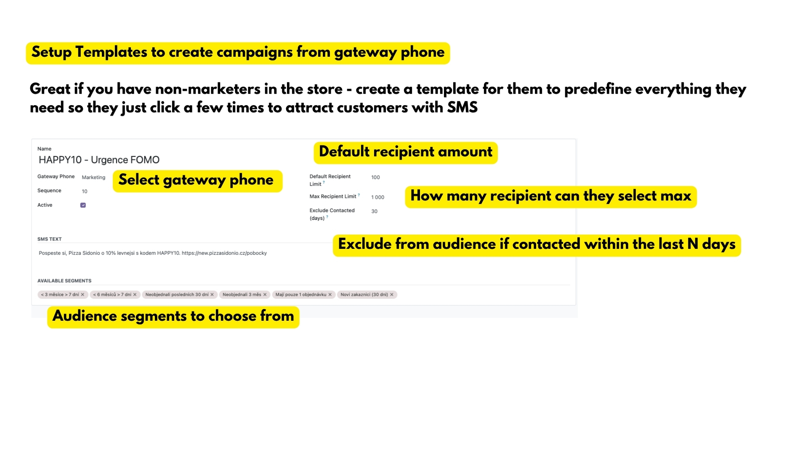

Odoo charges you for every single SMS through their IAP credit system.
For businesses sending hundreds or thousands of SMS per month — order confirmations, marketing campaigns, appointment reminders — IAP costs add up quickly. You already pay your mobile operator for an SMS plan. Why pay again?
Third-party SMS APIs (Twilio, Vonage, etc.) are cheaper than IAP but still charge per message, require API setup, and add another vendor to manage. For local businesses sending SMS to domestic numbers, a SIM card in your drawer is the cheapest option by far.
This module turns any Android phone into a full SMS gateway for Odoo — no IAP credits, no third-party API, no per-message cost.
Add your Android phone in Odoo, generate an API key, and scan the QR code with the companion app. Pairing takes 30 seconds.
Use Odoo SMS features normally — individual messages, mass mailings, automated actions. The module intercepts outgoing SMS and routes them to your phone instead of IAP.
Your phone sends the SMS from its SIM card and reports delivery status back to Odoo in real time. Every message is tracked with full mailing.trace integration.




| Feature | Description |
|---|---|
| Multiple Phones | Register as many Android phones as you need. The module distributes messages across them automatically with load balancing (least-loaded phone first). |
| Dual SIM Support | Phones with two SIM cards can use either number. Assign a specific SIM per campaign or let the phone choose automatically. |
| QR Code Pairing | Generate an API key and QR code in Odoo. Scan it with the companion app — no manual URL/key entry needed. |
| Daily & Monthly Limits | Set per-phone daily and monthly SMS caps to stay within carrier limits. Counters reset automatically. Configurable billing period start day. |
| Rate Limiting | Control SMS-per-minute rate to avoid carrier throttling. Messages queue automatically and send at the configured pace. |
| Domain Filtering | Route SMS to specific phones based on partner attributes. Example: Czech numbers go to Phone A, Slovak numbers to Phone B. |
| FCM Push Wake | When new SMS are queued, the module sends a Firebase push notification to wake the phone app instantly — no polling delay. |
| Heartbeat Monitoring | Phones report battery level, signal strength, and online status. Automatic offline detection after configurable timeout. |
| Stuck SMS Recovery | SMS stuck in processing for more than 30 minutes are automatically reset to pending and re-queued. |
| Segment-aware Counting | Limits are counted in SMS segments (not messages) so multi-part SMS are tracked accurately. |
The module plugs directly into Odoo SMS Marketing (mass_mailing_sms). Every feature you already know works — just without IAP costs.
| Feature | How it works with SMS Gateway |
|---|---|
| SMS Campaigns | Create campaigns in Odoo Mass Mailing as usual. Select "SMS Gateway" as provider — messages are routed to your phones. |
| Marketing Segments | Built-in segments: "No order in 3 months", "Single order only", "New customers (30 days)". Or create your own with custom domain filters. |
| Marketing Templates | Reusable SMS templates with placeholder support ({{object.name}}, {{object.email}}, etc.). Set default limits and segments per template. |
| Recipient Exclusion | Automatically skip partners who received an SMS in the last N days. Prevents over-contacting. Configurable per campaign. |
| Unsubscribe Handling | Long Odoo unsubscribe URLs are replaced with a short "odhl. sms: STOP" text to save SMS characters. Respects blacklist. |
| Delivery Tracking | Full mailing.trace integration. See sent/error/pending counts per campaign. Campaign auto-completes when all SMS are delivered. |
| Pause & Resume | Pause a running campaign at any time. Queued SMS wait until you resume. No messages are lost. |
| Aspect | Odoo IAP SMS | SMS Gateway (this module) |
|---|---|---|
| Cost per SMS | ✗ IAP credits (varies by country) | ✓ Your SIM plan (often unlimited or flat-rate) |
| Setup | Buy credits, configure IAP account | ✓ Scan QR code with your phone |
| Sender number | ✗ Random / shared number | ✓ Your own phone number (recipients know you) |
| Multiple phones | ✗ Not applicable | ✓ Unlimited phones with load balancing |
| Works offline | ✗ Requires internet to IAP service | ✓ Phone queues and sends when connected |
| Delivery tracking | Basic | ✓ Real-time status with mailing.trace |
| Mass mailing | ✓ Built-in | ✓ Full integration |
The module exposes a simple REST API that the companion Android app uses to poll for pending SMS, confirm delivery, and send heartbeats. The API is secured with per-phone API keys (X-API-Key header).
Companion Android app available separately (free, open source).
Mobile App — sending campaigns from the gateway phone

Phone Setup — limits, statistics, and multi-phone load balancing

Template Configuration — pre-configure everything for your team

Odoo 18.0 Community or Enterprise
Depends on: sms, mass_mailing_sms, phone_validation, sale, point_of_sale
Python: qrcode (installed automatically)
Android companion app (free, open source)
Need help? Contact us at info@michalvarys.eu